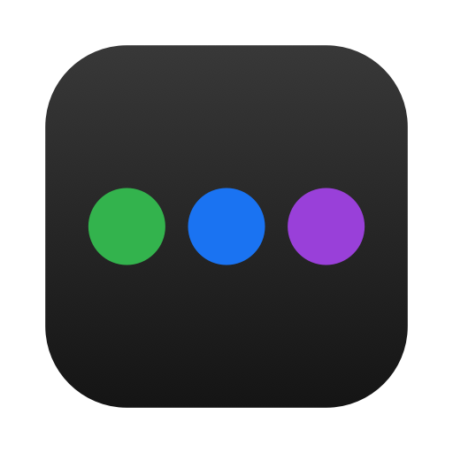
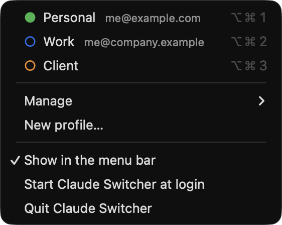
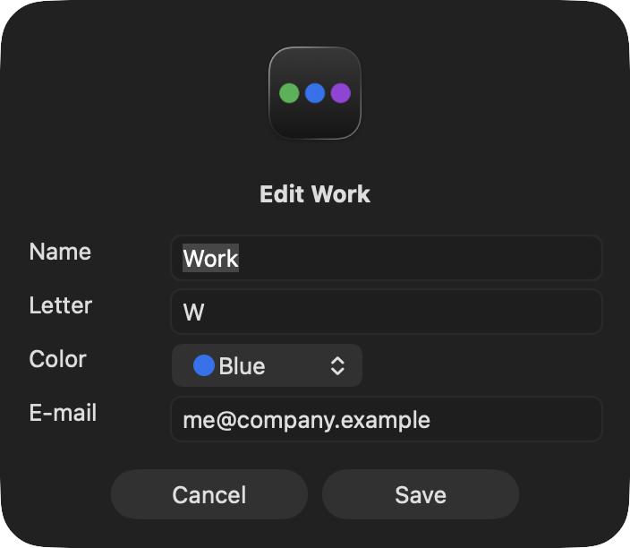

Claude Switcher
Several Claude Desktop accounts side by side on one Mac. One Dock icon each, no logging out.
Download for macOS Source on GitHub
What it does
- One profile per account. Personal, Work, a client: each one is its own Claude Desktop, signed in to its own account, open at the same time as the others.
- One Dock icon per profile. Each has a coloured letter, and the dot under it means "this one is open". Click it to bring that account to the front.
- Never two copies of the same profile. If a profile is already open, it is brought forward instead of started again.
- A menu where your mouse is, and in the menu bar. The menu bar shows one dot per profile ●●○, filled when it is open.
- Keyboard shortcuts.
⌥⌘1,⌥⌘2,⌥⌘3… bring a profile forward from any app. - Safe login. It closes the other profiles while you sign in, so the login lands in the right one (see below).
- Speaks your language. English, Italiano, Español, Français, Deutsch, picked from your Mac's settings.


Is a profile a folder on my disk?
Yes, and that is all it is. Claude Desktop keeps everything about your account (the login, settings, caches) in one folder. A profile is simply another such folder, so each account keeps its own things and none of them can see or overwrite the others.
Your first profile is Claude's normal folder, which Claude Switcher never touches. Each extra profile gets a folder next to it, created by Claude Desktop itself the first time that profile opens.
Everything it puts on your Mac
The complete list. Nothing is installed anywhere else, nothing is sent anywhere, and Claude.app itself is not modified.
| Where | What it is |
|---|---|
~/Applications/Claude Switcher.app | The app, where you put it. About 1 MB. |
~/Applications/Claude <Name>.app | One small launcher per profile: the icon you click in the Dock. About 1 MB each. |
~/Library/Application Support/Claude | Claude's own folder, used by your first profile. Left as it is. |
~/Library/Application Support/Claude-<Name> | The data of each extra profile: its login and settings. Made by Claude Desktop, not by Claude Switcher. |
~/Library/Application Support/Claude Switcher/profiles.json | The list of your profiles: name, letter, colour, the e-mail you typed. A few hundred bytes. |
~/Library/LaunchAgents/com.makebecome.claude-switcher.profile.<id>.plist | Only if you tick "Open when the Mac starts" for a profile. Untick it and the file goes away. |
| Your Dock | An icon per profile is added when you create it and removed when you delete it. |
What "Delete profile" does
It removes the profile's icon from the Dock and the menu, and moves its launcher to the Trash. It does
not delete the profile's data folder: your account data stays where it is, and making a profile
with the same name later finds it again. To really erase it, drag the Claude-<Name> folder to the Trash yourself.
Uninstalling
Quit Claude Switcher, delete the profiles you made (or just drag their launchers out of ~/Applications), then drag Claude Switcher.app to the Trash. Your Claude accounts and their folders are left untouched.
Why "Safe login"
When you sign in, Claude Desktop sends you to the browser, and the browser hands the login back to "Claude". With several profiles open, macOS picks one of them, and it may not be the one you were signing in to. Safe login closes the other profiles for that moment, so there is only one place for the login to arrive.
Install
- Download the zip from the latest release and unzip it.
- Move
Claude Switcher.apptoApplicationsin your home folder (or the main one). - The app is not notarised by Apple, so the first time right-click it and choose Open, then confirm.
- Click it: the menu appears where your mouse is. Choose New profile… to add your second account.
Needs macOS 13 or later and Claude Desktop in /Applications. To build it yourself instead:
git clone https://github.com/make-become/claude-switcher
cd claude-switcher
./build.shGood to know
- The e-mail next to a profile is a label you type; Claude Desktop does not store it in a place other apps can read. If two profiles end up on the same account, the menu says so.
- Extra profiles are started with a standard launch option for this kind of app (
--user-data-dir). Claude Desktop does not document it, so an update could change how it behaves. - In extra profiles, Claude Desktop turns off pairing with the Claude browser extension.